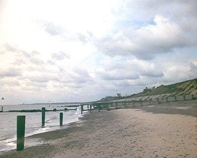
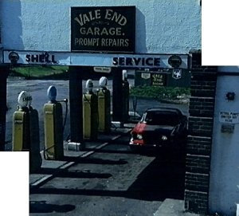
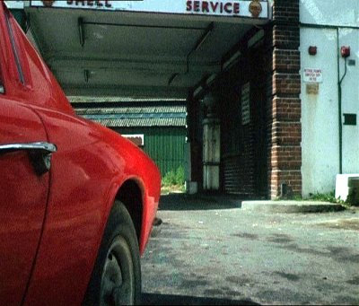
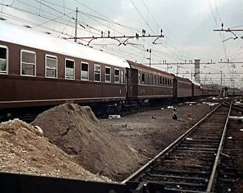
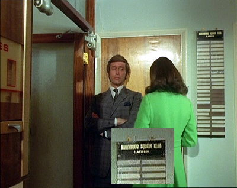
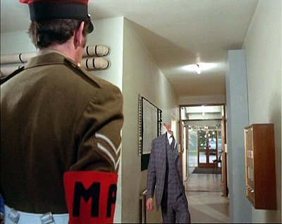
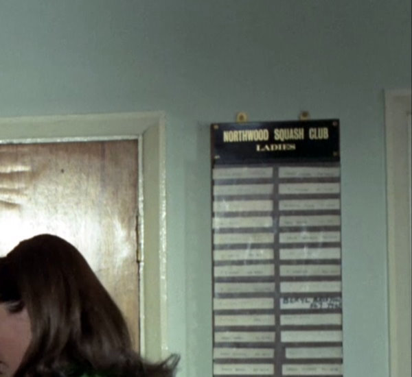
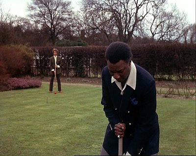
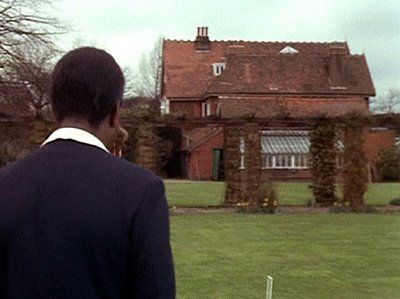
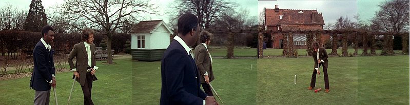

|
|
HELP FIND THE FOLLOWING LOCATIONS
PAGE 65
DEPARTMENT
S: Handicap Dead (John Gilling:
July 1968)
Unknown
1 - Johnny
Collins
is found dead on the beach by Colindale Golf Course, Scotland.

DEPARTMENT
S:
The Bones of Byrom
Blain (Paul
Dickson: April 1969)
Bignell's Corner Service Station, South Mimms
(Redeveloped)-
Annabelle goes
to investigate Vale End Garage in her search for Jason.
Identified by Geoff Dodd, June 2018
 
Unknown 1 - The train with Sir Curtis aboard approaches Gare du Norde, Paris.

Northwood
Squash Club, 22 Chestnut Avenue, Northwood - Stewart Sullivan (Joel Fabiani)
goes to se
general Crawley (Patrick Barr) at his squash club. He is refused access
until
Annabelle (Rosemary Nicols)
arrives with news of ‘Operation Groundsheet’.
(Identified by Geoff Dodd, August 2017)
  
DEPARTMENT S: The Perfect Operation
(Cyril Frankel:
February 1969)
Broadlawns, Barnet Lane, Elstree
- Jason King (Peter Wyngarde)
joins Sir
Curtis Seretse
(Dennis Alaba
Peters) for a game of croquet as they discuss Haslet-Wood case.
(Identified by Geoff Dodd, March 2022)Queen’s Theatre, 31 Queen’s Road Central, Hong KongQueen’s Theatre, 31 Queen’s Road
Central, Hong Kong
Queen’s
Theatre, 31 Queen’s Road Central, Hong KongQueen’s Theatre, 31 Queen’s
Road Central, Hong KongQueen’s Theatre, 31 Queen’s Road Central, Hong
Kong
 

Unknown 2 - Jason King flies back from Istanbul.

Think you know a spot? Need a bigger image? Email me.
< Previous | Index | Avengerland | Next >
Copyright © 2003 Anthony R. McKay